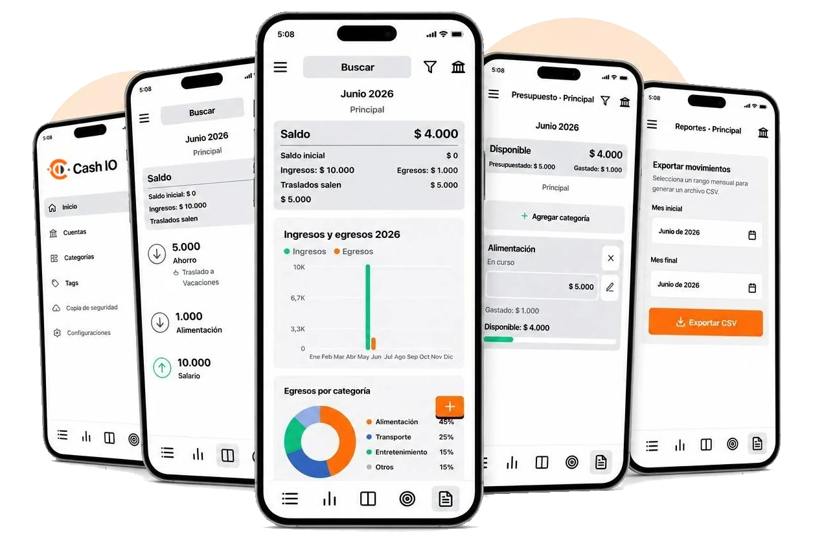

Ingresos y egresos
Registra montos, fechas, descripciones y tipo de movimiento con una interfaz rápida.
Cash IO te ayuda a registrar ingresos y egresos, administrar cuentas, planear presupuestos, revisar saldos mensuales, ver gráficas y exportar reportes CSV desde una base de datos local.

Disponible para Android
El enlace oficial se conectará cuando la ficha pública esté lista. Por ahora queda como ancla para integrarlo sin cambiar la estructura.
Lo esencial para organizar tu mes, sin enviar tus registros financieros a un servidor externo.
Registra montos, fechas, descripciones y tipo de movimiento con una interfaz rápida.
Clasifica cada registro con una categoría y varios tags para encontrar patrones.
Crea cuentas adicionales a la cuenta por defecto y mueve montos entre ellas.
Visualiza ingresos, egresos y estado general de cada cuenta en un solo lugar.
Define presupuestos por categoría, agrega o quita categorías y cópialos mes a mes de forma manual o automática.
Busca por descripción y filtra por categoría o tag dentro del mes visible.
Revisa saldos diarios y egresos por categoría para entender cómo se mueve tu dinero.
Genera archivos CSV por rango mensual para análisis, respaldo o conciliación.
Activa saldos históricos y copias opcionales en Google Drive o iCloud en builds nativas.
Política de privacidad
Vigente desde el 25 de junio de 2026.
Cash IO es desarrollada por Omar Barbosa. Para consultas sobre esta política puedes usar el sitio omarbarbosa.com.
Cash IO guarda localmente la información que registras dentro de la app, incluyendo movimientos, montos, fechas, descripciones, categorías, tags, saldos mensuales y preferencias. Estos datos pueden incluir información financiera, pero se almacenan en una base de datos SQLite local en tu dispositivo.
Cash IO no vende datos personales, no opera un servidor propio para recibir tus datos financieros y no usa tus registros para publicidad o analítica. La app usa los datos que ingresas sólo para mostrar saldos, filtros, gráficas, reportes y las funciones propias de administración financiera.
Si activas la copia de seguridad, Cash IO puede guardar una copia de la base de datos en Google Drive en Android o iCloud en iOS. Esta función es opcional, depende de la cuenta del usuario y se usa únicamente para respaldar o restaurar la información.
Los datos permanecen en tu dispositivo hasta que los elimines desde la app, borres los datos de la aplicación o desinstales Cash IO. Las copias creadas en Google Drive o iCloud permanecen bajo la cuenta del usuario y pueden administrarse desde esos servicios.
La base de datos se almacena localmente en el espacio de la app. Cuando se usa una copia de seguridad opcional, la transferencia y el almacenamiento dependen de los mecanismos de seguridad de Google Drive o iCloud.
Términos de uso
Vigente desde el 26 de junio de 2026.
Al usar Cash IO aceptas estos términos. Si no estás de acuerdo, no uses la aplicación. Cash IO puede actualizar estos términos cuando sea necesario; la versión publicada en esta página será la referencia vigente.
Cash IO ayuda a registrar y visualizar información financiera personal, pero no reemplaza asesoría contable, financiera, legal o tributaria. Las decisiones tomadas con base en los datos, reportes o saldos de la app son responsabilidad exclusiva del usuario.
La app se entrega tal como está y según disponibilidad. Aunque se busca que funcione correctamente, Cash IO no garantiza ausencia de errores, disponibilidad permanente, exactitud absoluta de cálculos, compatibilidad con todos los dispositivos ni conservación indefinida de datos.
El usuario es responsable de revisar sus registros, mantener copias de seguridad cuando lo considere necesario y verificar restauraciones. Cash IO no será responsable por pérdida de datos, errores de captura, respaldos no realizados, fallas del dispositivo o cambios en servicios de terceros como Google Drive o iCloud.
En la máxima medida permitida por la ley aplicable, Omar Barbosa y Cash IO no serán responsables por daños directos, indirectos, incidentales, especiales, consecuenciales, pérdida de dinero, pérdida de datos, lucro cesante o cualquier perjuicio derivado del uso o imposibilidad de uso de la app, incluso si se informó la posibilidad de dichos daños.
No debes usar Cash IO para actividades ilegales, para vulnerar derechos de terceros, para intentar afectar la seguridad de la app o para manipular servicios externos conectados a funciones opcionales de respaldo.
Para preguntas sobre estos términos, usa omarbarbosa.com.